Meningen med livet
Överlevare berättar
I dag har vi ett parti i vår riksdag med starka nationalsocialistiska grundvärderingar och uttalat främlingsfientliga åsikter. Det betyder att 5 % av valmanskåren sympatiserar med dessa åsikter!Det du ser är grunden till en fotobok med bilder hämtade från i första hand Auschwitz – Birkenau. Bilderna är tagna under ett flertal resor våren, sommaren och hösten 2012. Bilderna kommer att presenteras tillsammans med skildringar och berättelser hämtade från samtal med överlevare.En bok som tål att "ligga framme" och att samtala kring!Vi får aldrig glömma!Hans Carlbrand
Vaktlokalen och ingången till lägret i Auschwitz med den välkända skylten. Stölden av skylten visade sig i efterhand vara positiv för museet genom all den uppmärksamhet som händelsen fick i världspressen.

Vaktlokalen, vid grinden till lägret i Auschwitz

Detalj från vaktkur, Auschwitz. Enkel träbyggnad som skydd för väder och vind.
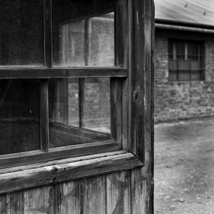
Auschwitz, Taggtrådstängsel i dubbla rader med patrulleringskorridor mellan.

Auschwitz, Bevakningstorn och stängsel.
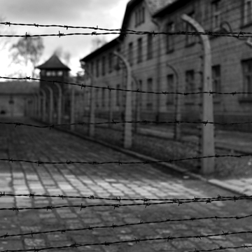
Auschwitz, Taggtrådstängsel i dubbla rader med patrulleringskorridor och bevakningstorn i bakgrunden.

Varningsskylt för högspännings stängsel Auschwitz.

Varningsskylt utanför block 11 Auschwitz.
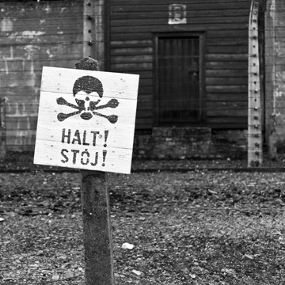
Block 11 Auschwitz Gallergrind i korridoren utanför förhörslokalerna.
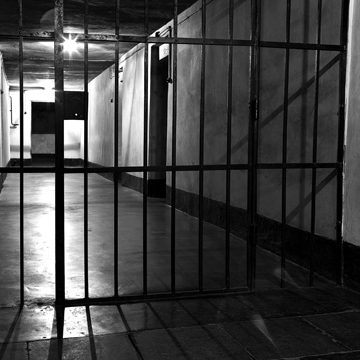
Block 11 Auschwitz. Svältceller i blockets källare.

Grinden in till avrättningsgården, Auschwitz med muren i bakgrunden

Block 11 Auschwitz. På vägen mot avrättning tvingades fångarna att klä av sig nakna.
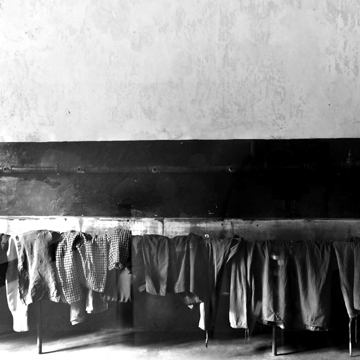
Auschwitz, förrum till gaskammaren.
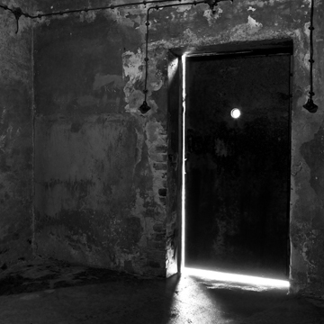
Auschwitz, Gaskammaren. Kammaren användes för experiment på bland annat ryska krigsfångar. Syftet var att utveckla tekniken.

Auschwitz, krematoriet. Vagn som används vid kremeringen.

Auschwitz, krematoriet med ugnar, totalt 4 st.
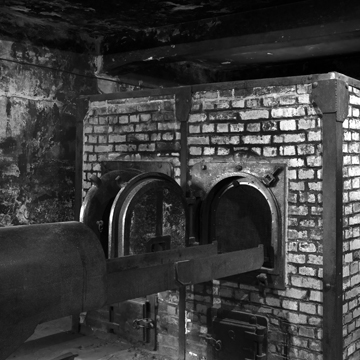
Auschwitz, krematoriet. Rälssystem med vändplattor i golvet.

Auschwitz, krematoriet. Vagnar som används vid kremeringen.

Birkenau, bangården med avlastningsramp och porten in till lägret i bakgrunden.
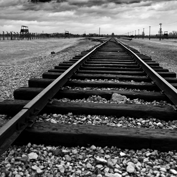
Birkenau, bangården med avlastningsrampen i bakgrunden.

Birkenau, karantänlägret, tidigare stall för det polska kavalleriet.

Birkenau, detalj från bangården.

Godsvagn som användes för transport av fångar till bl.a. Birkenau. I förgrunden syns trappan upp till den vaktkur som satt monterad på vagnarnas utsida. I bakgrunden syns porten in till lägret i Birkenau.
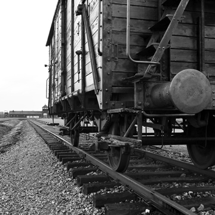
Godsvagn som användes för transport av fångar till bl.a. Birkenau.

Birkenau, grinden in till krematorium 2.

Birkenau, kvinnolägret, interiör barackerna. Betonggolvet har tillkommit i efterhand.

Birkenau, kvinnolägret, interiör barackerna. Exempel på bisarra skyltar och texter på väggarna. Tittar du noga ser du inskriptioner. Dessa har tillkommit i efterhand och är inte autentiska.
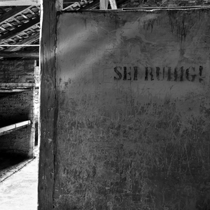
Birkenau, kvinnolägret, interiör barackerna. Exempel på bisarra skyltar och texter på väggarna. Tittar du noga ser du inskriptioner. Dessa har tillkommit i efterhand och är inte autentiska.
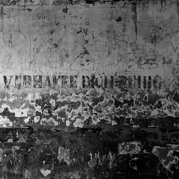
Birkenau, kvinnolägret, interiör barackerna. Betonggolvet har tillkommit i efterhand

Vy över Birkenau nr.1 sett från avlastningsrampen.

Grindarna in till Birkenau nr.1 i förgrunden syns skyddsstängsel framför den högspänningsförande taggtråden.
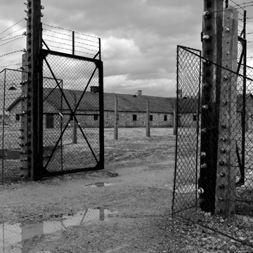
Grindarna in till Birkenau nr.1 i förgrunden delar av vaktlokalen i anslutning till avlastningsrampen.
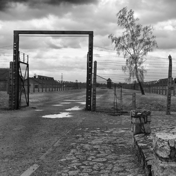